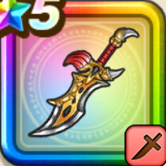

ゲレゲレファング
攻略班 9.5点 / ビーストモードパンサークラッシュいきなりピオリム気分アゲてこ！獲物は逃さない
くわしい特徴
【レベル別習得スキル】 Lv1【魔人】会心率+1% Lv1【ニンジャ】すばやさ+10 Lv10【二刀】二刀流時の斬撃・体技によるダメージ+5% Lv20ビーストモード（消費MP：最大MPの45%）自身にかかっている良い効果を最大2ターン延長し、自身の会心ダメージをかなり上げ、行動回数を2ターンの間+1する(戦闘中1回のみ) Lv30パンサークラッシュ（消費MP：61）敵全体に威力400%とランダムな敵に3回威力150%のジバリア/バギ/メラの斬撃ダメージを与え、仲間全員の会心率か暴走率を上げる Lv35エレメント系へのダメージ+5% Lv40悪魔系へのダメージ+5% Lv45攻撃力+12 Lv50いきなりピオリム（消費MP：8）戦闘開始時に仲間全員のすばやさを上げる(効果2ターン) Lv50気分アゲてこ！（消費MP：15）戦闘開始時に仲間全員の会心率か暴走率を上げる(効果2ターン) Lv50獲物は逃さない（消費MP：最大MPの2%）戦闘中自身が会心の一撃を4回発生させると両隣にいる味方の会心ダメージか暴走ダメージを上げる 【限界突破スキル】 1凸スキルの斬撃・体技ダメージ+7% 2凸スキルの斬撃・体技ダメージ+7% 3凸スキルの斬撃・体技ダメージ+7% 4凸スキルの斬撃・体技ダメージ+7%